Overview
PICO-8 is like an emulator for a video game console that was never made. But, unlike a typical emulator, PICO-8 includes the ability to browse and download games. What's more, is that the PICO-8 environment includes all the tools you need to create and modify games, whether they are ones of your own creation or ones that you downloaded yourself.
Environment
When you first launch PICO-8, you are presented with a command prompt. This is a bit like the prompt computers that ran MS-DOS would boot to back in the 1980's.
Commands
These are some of the commands you can run. Don't run any of these just yet.
- LS - show the files in the current directory
- RUN (or ctrl-r) - run the current cartridge
- SAVE (or ctrl-S) - save the current cartridge
- INSTALL_DEMOS - install a few demo cartridges
- SHUTDWON (or ctrl-q) - quit PICO-8
- REBOOT - restart PICO-8
- SPLORE - explore community created cartridges
Splore
Let's run the splore command now.
You will be greeted with the favorites view. It will be empty to start.
Whenever you select a cart, you will be able to tag it as a favorite so it
shows up here.

Pressing the right arrow takes you to the Game Jam section. These are carts
created during Game Jams which are time limited competitions where
participants write a game using a common theme as inspiration.

Press right to see a list of randomly chosen games. If you are tired of going
through the featured list, this is sometimes a good way to find something new.

Press right again to go to a list of new games. These are the most recent
community uploads. The quality of the games in this list is going to be hit or
miss. Not all of them will be complete.

Press right again to see my favorite list, the featured list. These are
usually very high quality games or demos that highlight what is possible using
PICO-8. My kids greatly enjoy going through this list and playing the games
that catch their eye.
We will return to this list shortly.

The next section is one that lets you search for games. This is helpful if you have a particular game you are trying to find or want to see what the community has made on a specific topic.

The final section lets you browse your local files. These are the same files
you will see by running ls from the command prompt.

Browsing Games
Let's go back to the featured list. Press enter to update the list. This
requires Internet access! It will data about a number of games.
If you don't have Internet access, run the install_demos command to install
and run a few demo carts.

Use the arrow keys to navigate the list.

If you press enter on a game, you will have the option to run or favorite
the game.

Choosing run will start the game. Most games give show a title screen and
main menu. Some, like flip knight do not. Nearly all games can be controlled
using a combination of the arrow keys and the action keys (z and x). z maps to
X and x maps to O. When in doubt, just start pressing the action keys to
see what happens!

Press esc and choose exit to splore if you want to exit the game.

Editing a Downloaded Game
As mentioned earlier, any game you run in PICO-8 can also be edited in PICO-8! This gives you super powers. It allows you to customize any aspect of a game you want! Let's take a peek in a cart to learn about the built-in editing tools.
Run a game that looks interesting (or the Jelpi demo, if you don't have
Internet access). Once it is running, hit esc. If it gives you the option to
exit to splore, choose it and hit esc. Otherwise, just hit esc. This
should put you at a prompt. (It is the > at the top of this next
screenshot.)

Now, hit esc to go into the code editor. This shows you all of the code in
the game you were running most recently.
The currently active tool is highlighted in the top right corner of the screen
(() in the example.)
If the game makes use of mulitple code tabs, these will appear in the top left.
The game in the screenshot only has a single code tab (labeled 0).

To see the sprites (which include character and background graphics), click on
the face icon in the top right. It is just to the right of the () icon.
Unless you are editing the same game as me, the contents of this page will look different.
PICO-8 uses a fixed pallete (those are the colors used in the sprites). This pallete is shown in the top right. In the example, a light gray color is selected. The current sprite is shown in the top left. Sprites are 8 pixels wide and 8 pixels tall.
The available sprites are shown in the bottom pane. In this example, sprite
001 is selected.
There are a number of tools just above the bottom pane. These include a pencil, selection, movement, and paint bucket tool (among others).
Zoom levels, sprite pages, and sprite flags are also on this page, but those will be discussed when and where they are used in the tutorials.

Sprites don't do us much good if they are not placed in a world. Most PICO-8 carts make use of the built-in map memory to display their sprites. The map editor is to the right of the sprite editor. Click on it!

To the right of the map editor is the sound editor. Click on it!

To the right of the sound editor is the music editor. Click on it!

Those are all of the built-in tools. The PICO-8
Manual provides more
details about how to navigate and use the built-in tools. There's also a text
version included in your pico-8 installation! Look for pico-8.txt.
Making modifications to existing games is a great way to become familiar with the tools and to express your own creativity. This is best done with simpler titles as titles that push the limits of the console end up using advanced techniques to cram everything into the limits of the console which makes modifications more difficult than normal.
If you do end up wanting to make changes, hit esc to go to the prompt and
then use save to save the cart under a different name. Then feel free to make
the changes you want. Try them out by pressing ctrl-r or using the run
command. If you decide you don't like your changes, load your previously
saved version. If you like them, save them with ctrl-s or the `save command.
Creating Your Own Games
Now that we have explored an exist cart. Let's try making a simple cart.
Get to the prompt and run reboot. This will reset PICO-8.
Hit esc to go the code editor and enter the following.
- shift-L =
L - shift-R =
R - shift-U =
U - shift-D =
D
function _init()
col=7
x=10
y=10
end
function _update()
if btn(L) then x-=1 end
if btn(R) then x+=1 end
if btn(U) then y-=1 end
if btn(D) then y+=1 end
end
function _draw()
cls()
for i=1,5 do
circfill(x,y,10-i*2,col+i)
end
end
Hit ctrl-r to run it (or use the run command). You should see a
multi-colored circle that you can move around with the arrow keys.

Run save move_circle if you want to save it.
Adventure Game Tutorial
The content in this subsection comes from the "PICO-8 Top-Down Adventure Game Tutorial by Dylan Bennett.
- Original youtube playlist of the tutorial series
- Official homepage for the tutorial
- Other PICO-8 tutorials from the author.
It is also based on this write-up of Dylan's tutorial by John Lehmann.
Preview
Here is what you will build over the course of this tutorial.
DownloadOther Examples
Here are some screenshots of games others have made following this tutorial.
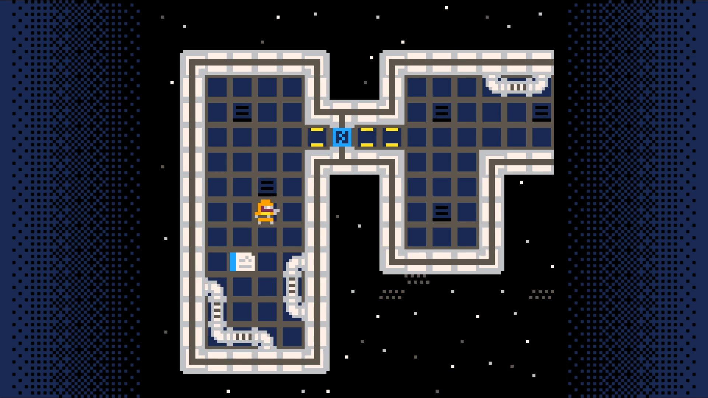 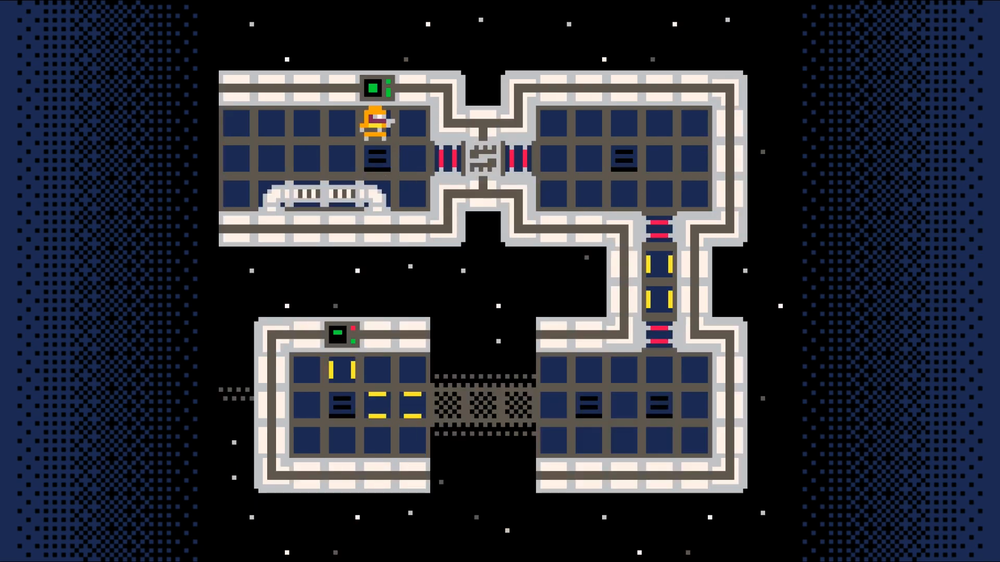 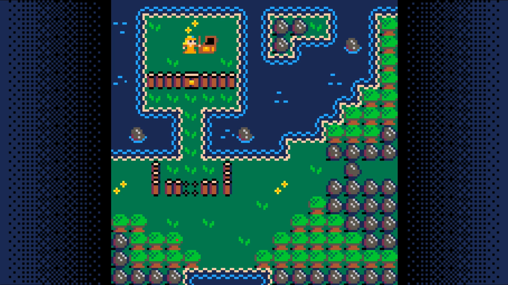 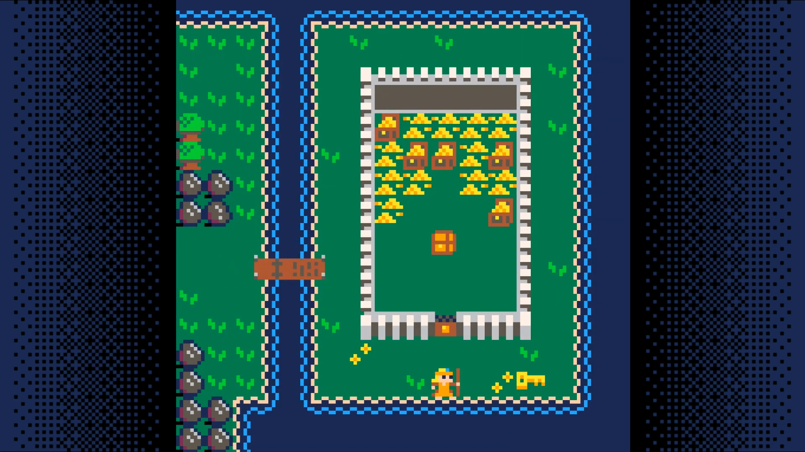 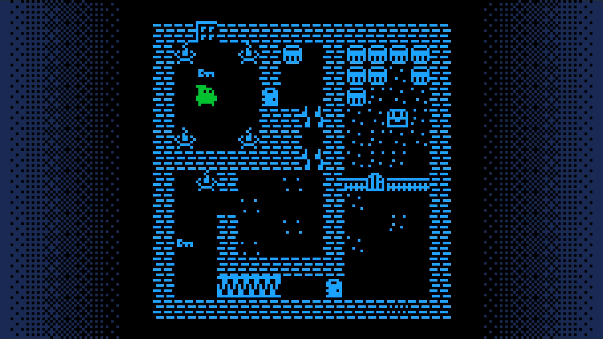This is a game made by the tutorial's author that is based on the framework built in the tutorial. It adds a few additional features not covered in the tutorial, but is a great example of what can be done with this foundation.
DownloadOther Top-Down Games
These are games that make use of a top-down perspective. Perhaps one of these will give you inspiration about what you want to include in your game?
Puzzle Cave is a great example of a game successful enough to lead to sequels. Here's the original. Notice that from a layout design standpoint, this isn't much more complex than the adventure game tutorial.
DownloadSequels usually add more than just additional levels. They often include new item or enemy types as this one does.
DownloadThe third installment of the game uses a different theme than the other two.
DownloadGames are often built around a core mechanic. This is a fun little game that more or less only has the core mechanic. As you play, think about what would be needed to take this from a concept to a finished product.
DownloadSome games keep you guessing. This one has several surprises just within its first few moments.
DownloadHere's a game that doesn't look much different than the adventure game tutorial, but it adds an inventory, dialog, the ability to inspect items, etc.
DownloadThe Map
Start by going to the sprite editor and drawing nine sprites:
- grass, fancy grass, and rock
- water, fancy water, and water rock
- road, fancy road, and wall
Here's an example of what they might look like:
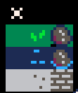Toggle sprite flag 0 on the rock, the three water tiles, and the wall sprite.
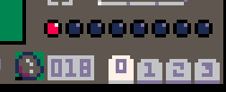Draw a Map
Now that you have some sprites created, lets use them to draw a map for our game.
Head on over to the map tool (third icon from the left in the top bar).
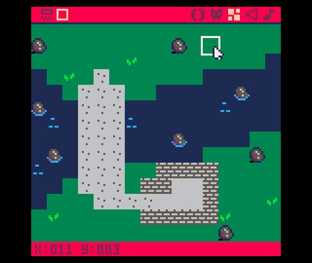Once you fill the first screen, add another. To do so, you'll need to pan the map by holding space and dragging with the mouse.
Here's what you might want to put on the second screen.
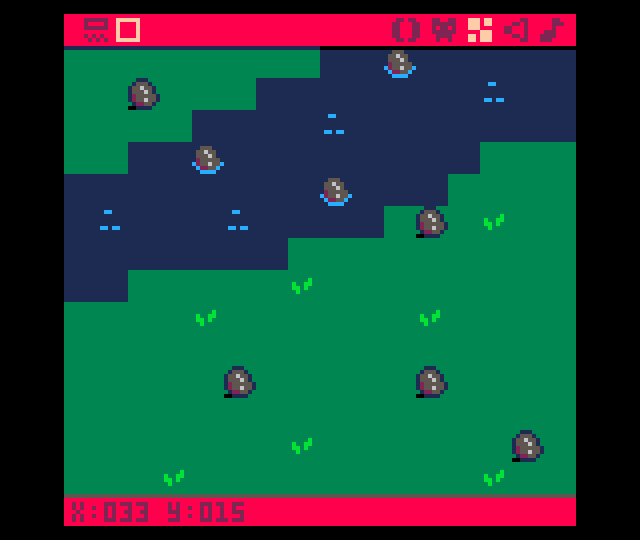Here's what the map looks like zoomed out with both screens populated.
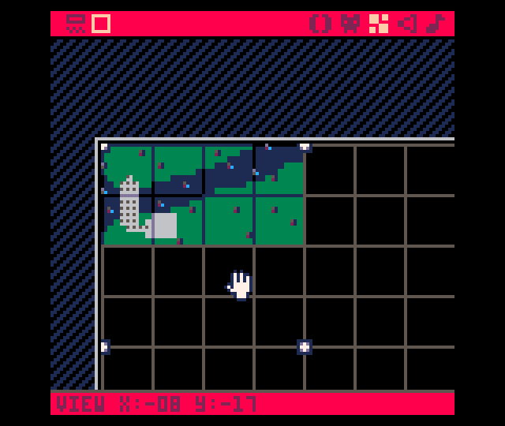Game Loop
Create the main game loop. Put this in the 0 tab of the editor.
--game loop
function _init()
map_setup()
end
function _update()
end
function _draw()
cls()
draw_map()
end
Map Code
Create code that draws the map. Click the + button to create a new tab. Put this code in the 1 tab of the code editor.
--map code
function map_setup()
--map tile settings
wall=0
key=1
door=2
anim1=3
anim2=4
lose=6
win=7
end
function draw_map()
map(0,0,0,0,128,64)
ends
End Result
DownloadThe Player
Draw a sprite for the player.
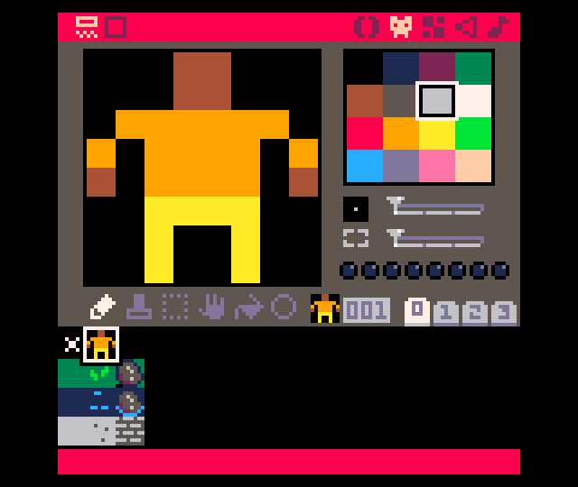Click on the + in the code editor to add a new tab. This will be used for the code related to the player.
-- player code
function make_player()
p={}
p.x=3
p.y=2
p.sprite=1
p.keys=0
end
function draw_player()
spr(p.sprite,p.x*8,p.y*8)
end
Call these functions from the game loop tab (tab 0).
--game loop
function _init()
map_setup()
make_player()
end
function _update()
end
function _draw()
cls()
draw_map()
draw_player()
end
End Result
Save your changes with ctrl+s. Run them with ctrl+r. You should see your player displayed on the map. The player cannot move around yet. We'll add some movement to the player in the next section.
DownloadMovement
Create a sound effect for bumping into an obstacle.
Do this by going to the sound editor. Change the settings of the sounds to
match those you see in the screenshot. Press space to play your sound to test
it out.

Add two functions is_tile and can_move to the map code tab.
function is_tile(tile_type,x,y)
tile=mget(x,y)
has_flag=fget(tile,tile_type)
return has_flag
end
function can_move(x,y)
return not is_tile(wall, x, y)
end
Add a function for moving the player to the player code tab.
Note: to get the arrow characters, use shift+L, shift+R, shift+U, shift+D.
function move_player()
newx=p.x
newy=p.y
if (btnp(L)) newx-=1
if (btnp(R)) newx+=1
if (btnp(U)) newy-=1
if (btnp(D)) newy+=1
if can_move(newx,newy) then
p.x=mid(0,newx,127)
p.y=mid(0,newy,63)
else
sfx(0)
end
end
Call this function from function update in the game loop tab.
function _update()
move_player()
end
End Result
Save your changes with ctrl+s. Run them with ctrl+r. You should now be able to move your player around the screen, but once you go off of the screen, you are no longer able to see them. In the next section, we will make the camera follow the player so we can explore more of the map.
DownloadCamera
Have the camera follow the player around the map.
Add code to set the camera to the draw_map function in the map code tab.
- divide the player's x and y coordinates by 16
- round down
- multiply by 16
- convert mapx, mapy to a pixel coordinate by multiplying by 8
function draw_map()
mapx=flr(p.x/16)*16
mapy=flr(p.y/16)*16
camera(mapx*8,mapy*8)
map(0,0,0,0,128,64)
end
End Result
Save your changes with ctrl+S. Run them with ctrl+R. The camera should now follow your character from screen to screen. Wondering a world without being able to interact with it isn't all that interesting so lets add some things the player can pick up in the next section.
DownloadKeys
Draw a sprite for a key and a sprite for a chest. The key can be picked up and the chest can be opened. When the player interacts with these items they are replaced by the sprite to the right, so you will need to draw two additional sprites.
The key is replaced by grass and the chest is replaced by an open chest.
Make a sound effect for the pick-up key sound.
Add two functions, swap_tile and get_key, to the map code tab.
function swap_tile(x,y)
tile=mget(x,y)
mset(x,y,tile+1)
end
function get_key(x,y)
p.keys+=1
swap_tile(x,y)
sfx(1)
end
Add a function, interact to the player code tab.
function interact(x,y)
if (is_tile(key,x,y)) then
get_key(x,y)
end
end
Now call this function from the mode_player function.
function move_player()
newx=p.x
newy=p.y
if (btnp(⬅️)) newx-=1
if (btnp(➡️)) newx+=1
if (btnp(⬆️)) newy-=1
if (btnp(⬇️)) newy+=1
interact(newx,newy)
End Result
Save your changes with ctrl+S. Run them with ctrl+R. You should now be able to have your character pick up keys, but you will not be able to see how many keys your character is holding. We will fix that in the next section.
DownloadInventory
When the player holds down the X key we'll show how many keys the player has in their inventory.
Create a new tab called inventory code and in in put a new function called show_inventory.
function show_inventory()
invx=mapx*8+40
invy=mapy*8+8
rectfill(invx,invy,invx+48,invy+24,0)
print("inventory",invx+7,invy+4,7)
print("keys "..p.keys,invx+12,invy+14,9)
end
Then call this function from the _draw function.
You can use shift-x to get the X button.
function _draw()
cls()
draw_map()
draw_player()
if (btn(❎)) show_inventory()
end
End Result
Save your changes with ctrl+S. Run them with ctrl+R. You should now be able
to pick up a key and then press X to see how many keys the player has in their
inventory. Next, lets add a way for the player to use the keys they collect.
Doors
We'll add doors that they player can open with their keys. First draw a pair if sprites, one for a closed door and, next to it, one for an open door.
Add a sound effect for opening a door.
Add a function open_door to open the door to the map code tab.
function open_door(x,y)
p.keys-=1
swap_tile(x,y)
sfx(2)
end
This function gets called in the interact function.
function interact(x,y)
if (is_tile(key,x,y)) then
get_key(x,y)
elseif (is_tile(door,x,y) and p.keys>0) then
open_door(x,y)
end
end
End Result
Save your changes with ctrl+S. Run them with ctrl+R. You should now be able to pick up a key and use it to unlock a door.
DownloadAnimate Tiles
In this step we add animated tiles. Animated tiles bring the map to life. Here we'll use them to make a spike trap that the player has to navigate through.
Create a pair of sprites, one for the spikes up and one with the spikes down. The animation will have cause the two sprites to flip between each other.
The tile with spikes up should have two flags set: flag 3 (anim1, or step one of the animation) and flag 6 (lose), which will cause the player to lose if they step on them.
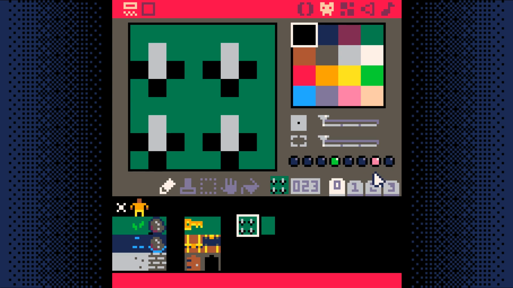The tile with spikes down should have one flag set: flag 4, (anim2, step 2 of the animation).
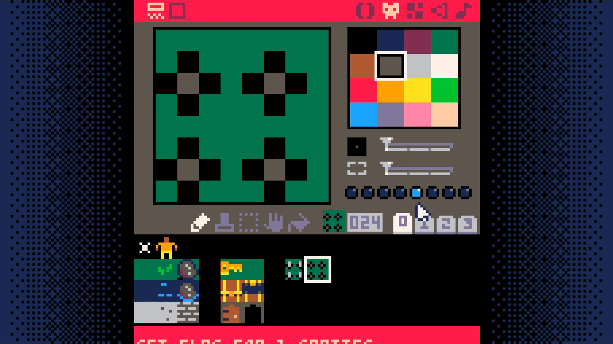Add two variables to the map_setup function in the map code tab.
function map_setup()
--timers
timer=0
anim_time=30 -- 30 = 1 second
Add a new function unswap_tile to the map code tab. Note that this function is nearly the same as swap_tile and so you can use copy paste to write it.
function unswap_tile(x,y)
tile=mget(x,y)
mset(x,y,tile-1)
end
Add a new tab, animation code. Add a new function toggle_tiles to this tab.
function toggle_tiles()
for x=mapx,mapx+15 do
for y=mapy,mapy+15 do
if (is_tile(anim1,x,y)) then
swap_tile(x,y)
sfx(3)
elseif (is_tile(anim2,x,y))then
unswap_tile(x,y)
sfx(3)
end
end
end
end
Add a new function called update_map to the map code tab.
function update_map()
if (timer<0) then
toggle_tiles()
timer=anim_time
end
timer-=1
end
Finally, call the update_map function from the _update function in the game loop (tab 0).
function _update()
update_map()
move_player()
end
End Result
Save your changes with ctrl+S. Run them with ctrl+R. Your animated tiles should change about once every second, but there still isn't a way to win the game. Lets add that next.
DownloadWinning and Losing
Add a new sprite that the player has to move over to win the game.
Set the last flag on this sprite. This is what the game will use to know the player has won the game.
Add game_win and game_over to _init in the game loop tab 0.
function _init()
map_setup()
make_player()
game_win=false
game_over=false
end
Add a new code tab to hold the win/lose code. This will be tab 5.
In this tab, add two new functions: check_win_lose, draw_win_lose
-- win/lose code
function check_win_lose()
if (is_tile(win,p.x,p.y)) then
game_win=true
game_over=true
elseif (is_tile(lose,p.x,p.y)) then
game_win=false
game_over=true
end
end
function draw_win_lose()
camera()
if (game_win) then
print("S you win! S",37,64,7)
else
print("game over!",38,64,7)
end
end
Change _update to only run if not game_over and call check_win_lose
function _update()
update_map()
move_player()
if (not game_over) then
update_map()
move_player()
check_win_lose()
end
end
Change _draw to only draw if not game_over else draw_win_lose
function _draw()
cls()
draw_map()
draw_player()
if (btn(X)) show_inventory()
if (not game_over) then
draw_map()
draw_player()
if (btn(X)) show_inventory()
else
draw_win_lose()
end
end
End Result
Save your changes with ctrl+S. Run them with ctrl+R. You should now be able to walk into spikes to lose and walk into the target to win. Next, we will add a way to easily reset the game.
DownloadTrying Again
Add a way for the player to restart the game when they win or lose.
Add the following else condition to the _update function.
else
if (btnp(X)) extcmd("reset")
Add the following code to the draw_win_lose function
print("press X to play again",20,72,5)
End Result
Save your changes with ctrl+S. Run them with ctrl+R. You should now be able to have reset the game after winning or losing.
Congratualations! This marks the point where you have a fully functional game!
You have an interactive world with a goal, obstacles to achieving that goal, the ability for the player to win or lose, and the ability to reset the game after a game over event.
Next, we will add text to the world to enable you to provide the player more guidance on what to do in the game.
DownloadBonus Step: Adding Text
This step will be a bit more involved than the previous steps. If you have made it to this step, you will definitely be able to complete it. Just take it slow and don't rush.
In map_setup, we have an unused sprite type (5). We are going to use this
to trigger the display of text to the user.
This opens up a world of possibilities. It allows to add Non-Player Characters (NPCs) that can speak with your character. Signs can provide instructions or warnings. You are able to tell your character's back story through dialog or notes or other narrative devices.
Result
DownloadBonus Step: Unlimited Sprite Types
We have been using sprite flags to differentiate between the different sprite types. This limits us to a maximum of 8 sprite types.
To overcome this limitation and support an unlimited number of sprite types, we are going to switch from using sprite flags to explicitly enumerating all of the sprites of each type.
In map_setup, we currently have this mapping of sprite types to their flags.
wall=0
key=1
door=2
anim1=3
anim2=4
lose=6
win=7
Change each of these to be a list of all of the sprite numbers for each sprite of that type. If you very closely followed along to this point, you should be able to copy these values. If you were more casual in where you placed each sprite type, your numbers will be different. Check each of these values against your setup.
wall={18,32,33,34,36,37,50,52}
key={20,36}
door={52}
anim1={23}
anim2={24}
lose={23}
win={7}
Replace the call to fget in is_tile in tab 1 with this:
for i=1,#tile_type do
if (tile == tile_type[i]) return true
end
return false
Once you have made these changes, hit ctrl-s to save your game and ctrl-r
to run it.
You will want to test to verify that all of the sprite types work. That means you will want to:
- Attempt to walk into all wall tile types (e.g. water, wall)
- Pick up all key tile types (e.g. the key and the chest)
- Step on all spike tile types
- Walk on all non-wall types (e.g. grass, stone)
If a tile isn't behaving as you expect, double check that the number for the
sprite is in the correct list in map_setup.
New Tile Type
Once you have verified all sprite types work, lets make use of the added flexibility by adding a new sprite type.
We are going to change the chest so it gives us gold instead of a key. Modify
map_setup. Remove sprite 36 (the chest) from the key list.
key={20}
and add it to a newly created gold list.
gold={36}
Picking up gold does us no good, if we don't keep track of it. Lets modify
make_player in tab 2. Put this at the end of the function.
p.gold=0
With a place to store it, we can add a function to allow us to get it. Copy
get_key in tab 1 and modify it to create get_gold.
function get_gold(x,y)
p.gold+=5
swap_tile(x,y)
sfx(1)
end
function interact(x,y)
if (is_tile(key,x,y)) then
get_key(x,y)
elseif (is_tile(door,x,y) and...
open_door(x,y)
elseif (is_tile(gold,x,y))
get_gold(x,y)
end
Now we just need to update show_inventory in tab 3 to show the player how
much gold they have. Start by making the rectangle 6 pixels taller by changing
invy+24 to invy+30. Then add this line to the end of the function.
print("gold ", .p.gold,invx+12, invy+20,9)
Save and run the game. The gold in the player's inventory should start out at
0. Open the chest and show the inventory. It should show 5 gold.
If you made it to this point, congratulations! You now have the ability to add an unlimited number of sprite types. Here are just a few of the possibilities:
- Chests that hold specific items
- Chests that hold a variable amount of gold
- Keys that only open certain chests or doors
- Items needed to complete quests
- etc
Result
DownloadResources
This page contains a collection of resources you can use to further your journey with PICO-8.
Game Development with PICO-8
A 72-page zine about doing game development with PICO-8.
PicoZines
This is a collection of freely downloadable magazines about PICO-8 programming.
The PICO-8 Educational Toolset
A collection of self-contained examples that demonstrate a single technique. By combining the techniques you have all you need to create a variety of games.
This toolset was created by Dylan Bennett. He is the author of the Adventure Game Tutorial content on this site.
PICO-8 Music Tutorials
55 videos on Youtube by Gruber. These walk you through the sound and music editors. He also has a variety of remakes of popular songs elsewhere in his channel that are worth checking out.